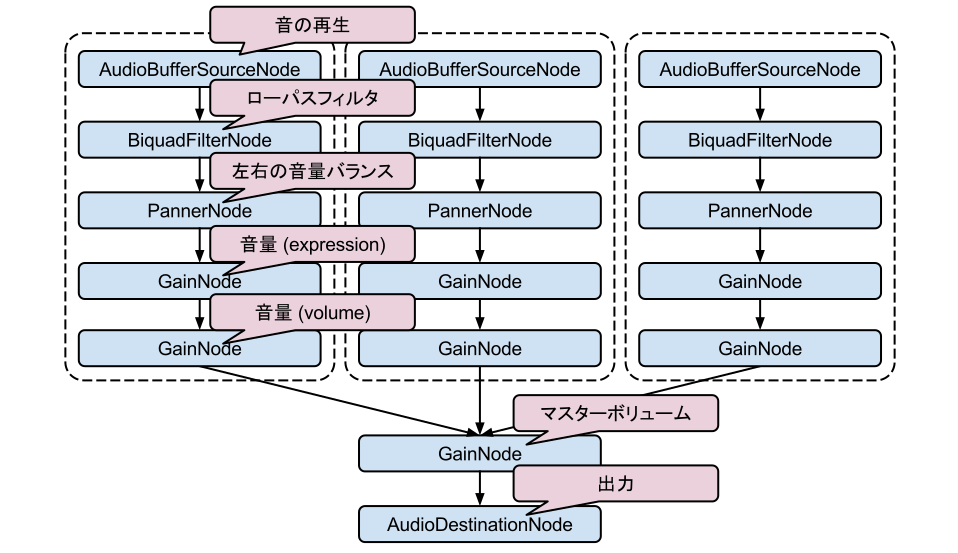

- 雑な説明: JavaScript で音関係ほとんどなんでもできるようにする API
- 音データの読み込み
ブラウザで対応している場合 *.wav, *.mp3 や *.ogg などもデコードして使える - オシレータによる波形から音の生成
- JavaScript による波形の操作
- 最近の API なので各環境でメソッド名が違ったり細かいところに違いがある
- Mozilla Firefox では Audio Data API という似たような機能のものがあったが Web Audio API に合流するため気にしないで良い
- iOS Safari ではユーザのアクションから発火されたイベントじゃないと音がならなかったり罠もたくさんある
- 仕様は和訳もありますがかなり古いので読むときは最新版と合わせて読む
Web Audio API とは
Web Audio API の簡単な使い方(概要)
パイプをゴールまで繋げて水を流す感じ
AudioNode をつなげていく
- AudioNode 同士をつなげていって、最終的に AudioContext の destination につなげて音を出す
- AudioNode には波形データから音を鳴らしたりオシレータから鳴らしたりするものや、音量調節やローパスフィルタやパニング、JavaScript で波形の操作をするものなどいろいろあります
- 音量などの値はスケジュールを組んで変化させることができる
Web Audio API の簡単な使い方
- AudioContext オブジェクトを作る (webkit とかの prefix がついたりする)
- AudioContext から用途に応じて好きな AudioNode を作る（たとえば createGain など）
- AudioNode 同士を connect メソッドでつなげる(最終的には AudioContext#destination に connect する)
- 音量などのパラメータをスケジュールするのは AudioParam の setValueAtTime や linearRampToValueAtTime などのメソッドを使う
Web Audio API の簡単な使い方
実際のコード例
// audioData は ArrayBuffer
function sound(audioData) {
var ctx = new webkitAudioContext();
var bufferSource = ctx.createBufferSource();
// AudioBufferSourceNode を AudioContext#destnation につなぐ
bufferSource.connect(ctx.destination);
// AudioData をデコードして AudioBuffer にする
ctx.decodeAudioData(audioData, function(buffer) {
// AudioBufferSourceNode にデコードしたデータをセットする
bufferSource.buffer = buffer;
// 音を鳴らす
bufferSource.start(0);
});
}
smfplayer.js, sf2synth.js とは
smfplayer.js: 標準 MIDI ファイルプレイヤー
- 標準 MIDI ファイル(以下 SMF )を読み込んで WebMidiLink 対応のシンセサイザを鳴らす
- MFi(着メロ) にもこっそり対応してる
- MFi の場合は SMF に変換する処理が入る
sf2synth.js: SoundFont シンセサイザ
- SoundFont を WebMidiLink の音源として使えるようにする
- Windows などは標準のMIDI音源があるが、ブラウザでは利用できないので必要
WebMidiLink
- ブラウザで動作するシンセサイザを鳴らすための仕様
- ざっくり言うと MIDI メッセージやシンセサイザ情報のやり取りを window.postMessage で行うときのルール
SoundFont とは
- サンプラーのデータフォーマット
- 今の主流は SoundFont2 (*.sf2)
- GM (General MIDI: 一般的なMIDI) の音色マップに対応した形のデータもある
- 音色の音域毎に、サンプリングされた音とその音の音程やループポイントなどが指定されている
- Windows では標準のMIDI音源 (MSGS: Microsoft GS Wavetable SW Synth) を嫌がって Timidity++ というソフトウェアで SoundFont を使う人も多い
- 結構サイズは大きい(数MB-1GBクラスのものもある)
sf2synth.js における SoundFont の扱い(概要)
対応機能
- 音程の変化は平均律を再生速度の変更で行うことで実装
- Volume/Modulation Envelope 対応
- 再生中の pitch bend (音程変更パラメータ)の変更に対応
Envelope
- いわゆる ADSR というパラメータ。 以下は Volume Envelope の時の例(Modulation Envelope の場合は音量ではなく変化させる度合いとなる)
- Attack: 鳴らし始めて最大音量になるまでの時間
- Decay: Sustain レベルになるまでの時間
- Sustain: 鳴らし続けているときの音量
- Release: 鳴らし終わった時、完全に消えるまでの時間
- SoundFont では Delay(立ち上がりまでの遅延時間), Hold(最大音量を維持する時間) というパラメータもある
ADSR Envelope

sf2synth.js における SoundFont の扱い
ノードの作成とスケジュール
NoteOn ごとに BufferSource をつくって使い捨てる
- 作った BufferSource に Panner(左右の音量バランスの調整), GainNode(チャンネル単位の音量変更), BiquadFilter(ローパスフィルタ) をつなげる
- ADSR は AudioParam のスケジュール機能を利用 (setValueAtTime, linearRampToValueAtTime)
- 使いすてるのも想定されている用途なのでガンガン使っても割りといける
- というか BufferSource は止めたら再生できなくなるので使い捨てるしかない
sf2synth.js における SoundFont の扱い
ノードの作成とスケジュール
NoteOn ごとに点線内のノードがつくられる
sf2synth.js における SoundFont の扱い
キーを押しっぱなしにしている場合
- SoundFont には各サンプルにループの開始と終わりが指定されている
- AudioBufferSourceNode の loopStart, loopEnd に指定して再生する
デモ
時間があったらやるけど多分ない
Web Audio API の感想など
良かった点
- パフォーマンス的にきつそうかな、と思っていた使い捨て方式は意外といけた
- 日本で活発に活動してる人がいるので日本語で参考になる資料や事例が多い
今後に期待
- Pitch Bend の変更で行われる頻繁に再生速度を変更する処理は重いので、特にモバイルではきつい
- ビブラートの実装が現状では ScriptProcessorNode 使うしかなさそうなので(設計的にもパフォーマンス的にも)無理
仕様上はできるはずなのでそのうちできるようになったら実装する
おわり